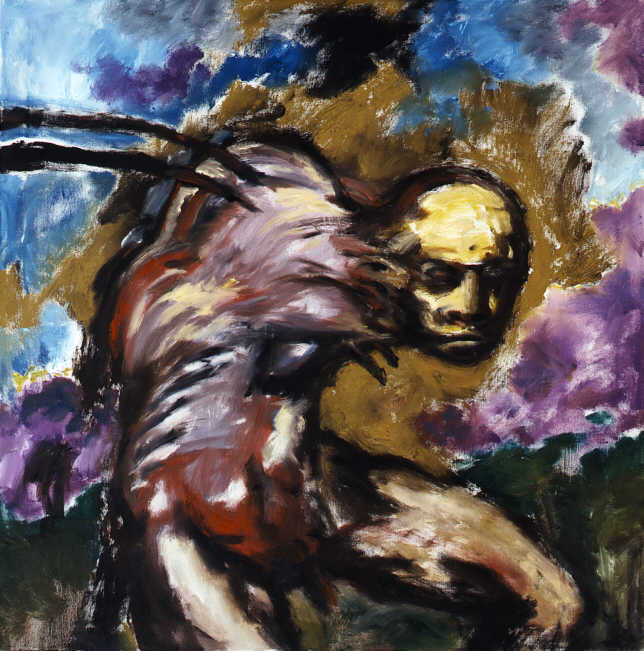

Hellraiser
Nach der eigenen Novelle The Hellbound Heart. Barkers Regiedebüt erschuf die Zenobiten — Priester eines Schmerzes, der wie Religion aussieht.
Buch & RegieEin interaktives Porträt · aus dem Archiv von clivebarker.info
The Official Clive Barker Website
Clive Barker — Autor, Regisseur, Maler. Ein halbes Jahrhundert zwischen Himmel, Hölle und allem, was dazwischen träumt.

Geboren am 5. Oktober 1952 in Liverpool, begann Clive Barker im Theater — als Dramatiker, Regisseur und Bühnenbildner —, bevor er Mitte der Achtziger mit den Books of Blood die Horrorliteratur neu vermaß.
Was folgte, war kein Genre-Handwerk, sondern eine eigene Kosmologie: Romane wie Weaveworld und Imajica öffneten Türen in Welten, die gleichzeitig monströs und zärtlich sind. 1987 setzte er mit Hellraiser seine eigene Novelle in Bilder um und schuf eine der ikonischsten Mythologien des modernen Kinos.
Weniger bekannt, aber vielleicht am nächsten an seinem Kern: Barker malt. Tausende Leinwände und Tuschezeichnungen — Dämonen, Heilige, Zwischenwesen — bilden das visuelle Rückgrat seines Schaffens, allen voran die hunderte Ölgemälde des Abarat-Zyklus.
Sechs Bücher, sechs Kontinente einer einzigen Imagination. Mit der Maus über die Titel fahren — Barkers eigene Bilder antworten.
Nach der eigenen Novelle The Hellbound Heart. Barkers Regiedebüt erschuf die Zenobiten — Priester eines Schmerzes, der wie Religion aussieht.
Buch & RegieDie Verfilmung von Cabal: Midian, die Zuflucht der Monster — eine Liebeserklärung an alle, die anders gebaut sind.
Buch & RegieBasierend auf seiner Erzählung The Forbidden. Urbaner Mythos, fünfmal in den Spiegel gesprochen.
Vorlage & ProduktionDetektiv Harry D’Amour zwischen Bühnenmagie und echter Schwarzkunst — Noir, wie nur Barker ihn träumt.
Buch & RegieScrollen — die Wand bewegt sich · Klick öffnet das Werk
Diese Seite ist ein Experiment: Was passiert, wenn man Anthropics Modell Claude Fable 5 das Archiv eines Imagineers übergibt und sagt — bau daraus einen Ort.
Fable 5 hat das Konzept entworfen, die Texte geschrieben, die Gemälde kuratiert, die Three.js-Bühne programmiert und jede Animation choreografiert. Kein Template, kein Baukasten — ein Modell, ein Prompt, eine Nacht in Barkers Kosmos.